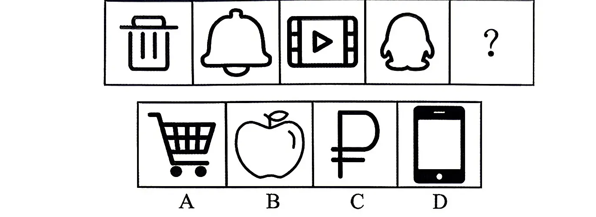
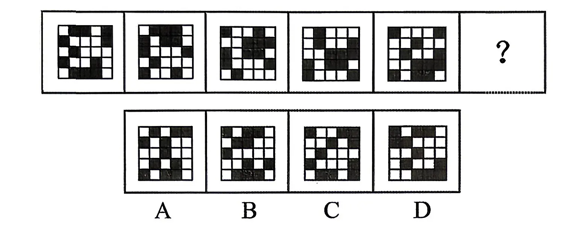
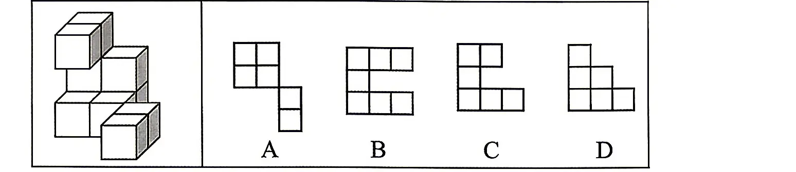

习近平总书记指出，“天下之本在家”，家庭是社会的细胞，家庭的前途命运同国家和民族的前途命运紧密相连，只有实现中华民族伟大复兴的中国梦，家庭梦才能梦想成真。关于家庭文明建设，下列说法正确的是（）。
①千家万户都好，国家才能好，民族才能好
②家庭和睦则社会安定，家庭幸福则社会祥和，家庭文明则社会文明
③广大家庭都要把爱家和爱国统一起来，把实现家庭梦融入民族梦之中
④家庭教育涉及很多方面，但最重要的是品德教育，是如何做人的教育
⑤广大家庭都要弘扬优良家风，特别是各级领导干部要带头抓好家风
A.2 项 B.3 项 C.4 项 D.5 项
答案点击查看答案与解析
中共中央办公厅印发新修订的《党政领导干部生态环境损害责任追究办法》。根据《办法》，下列说法错误的是（）。
A.违背新发展理念，造成生态环境严重破坏的，如已经离职，则不再追究
B.实行生态环境损害责任终身追究制
C.追究工作坚持党政同责、失职追责，依规依法、精准有效，严肃问责、终身追究
D.责任追究可以采取谈话提醒、批评教育、责令检查、诫勉等方式
答案点击查看答案与解析
当地时间2026年9月1日下午，国家主席习近平在比什凯克出席“上海合作组织+”会议并发表题为《共同倡导平等有序的世界多极化实现更加公正合理的全球治理》的重要讲话。根据讲话，下列说法错误的是（）。
A.主权平等、相互尊重是根本原则，世界多极化、发展道路自主化、国际关系民主化是人间正道
B.多边主义、对话协商是关键路径，世界上的事应该由少数国家主导
C.均衡有序、遵守法治是必然要求；互利共赢、普惠包容是发展方向
D.大国尤其要带头守规矩、讲法治，合作应对全球性难题
答案点击查看答案与解析
2026年7月23日，中共中央、国务院印发《关于加强新时代社会工作的意见》。关于加强新时代社会工作，下列说法错误的是（）。
A.坚持和加强党对社会工作的全面领导，坚持以人民为中心，走好新时代党的群众路线，坚持和发展新时代“枫桥经验”
B.完善共建共治共享的全球治理观，突出抓好新经济组织、新社会组织、新就业群体党的建设
C.不断增强党在新兴领域的号召力凝聚力影响力，抓好党建引领基层治理和基层政权建设，抓好凝聚服务群众工作
D.坚定不移走中国特色社会主义社会治理之路，推动新时代社会工作高质量发展，以高效能治理促进高质量发展和高水平安全良性互动
答案点击查看答案与解析
马克思主义不仅致力于科学“解释世界”，而且致力于积极“改变世界”。这一论断反映了马克思主义具有鲜明的（）。
A.阶级属性 B.世界眼光 C.实践品格 D.开放特性
答案点击查看答案与解析
习近平指出，改革是人民群众自己的事业，要全体人民共同参与，团结一致攻坚克难。改革过程中，要坚持以人为本，以实绩实效和人民群众满意度检验改革。这段话体现了哪些哲学道理（）。
①人民群众是历史的主体，对社会历史发展起决定性作用
②人的主观能动性的发挥可以决定改革事业的兴衰成败
③实践是检验认识是否具有真理性的唯一标准
④人民群众创造历史的活动可以突破社会历史条件的制约
A.1 项 B.2 项 C.3 项 D.4 项
答案点击查看答案与解析
习近平指出，推进党的自我革命是跳出治乱兴衰历史周期率的重要法宝。下列俗语体现的哲理与其相同的是（）。
A.志之所趋，无远弗届 B.物必先腐也，而后虫生之 C.梦虽遥，追则能达；愿虽艰，持则可圆 D.入其国者从其俗，入其家者避其讳
答案点击查看答案与解析
2026年6月23日，《习近平党建文选》第一卷、第二卷出版发行。下列说法错误的是（）。
A.全面从严治党，重在加强纪律建设。我们把党章对纪律的要求整合成政治纪律、组织纪律、廉洁纪律、群众纪律、工作纪律、生活纪律等六项纪律，强调六项纪律中政治纪律是管总的
B.全面从严治党，核心是加强党的领导，基础在全面，关键在严，要害在治
C.严肃党内政治生活是全面从严治党的基础。党要管党，首先要从党内政治生活管起；从严治党，首先要从党内政治生活严起。
D.党的思想建设决定党的建设方向和效果，不抓党的思想建设或背离党的思想建设指引的方向，党的其他建设就难以取得预期成效
答案点击查看答案与解析
《关于制定国民经济和社会发展第十五个五年规划的建议》发布，下列关于“十五五”时期经济社会发展的主要目标，说法正确的是（）。
A.全要素生产率稳步提升，居民消费率明显提高，出口拉动经济增长主动力作用增强
B.教育科技人才一体发展格局全面形成，基础研究和原始创新能力显著增强
C.居民收入增长和经济增长同步、劳动报酬提高和劳动生产率提高同步，中等收入群体持续扩大
D.绿色生产生活方式基本形成，碳中和目标如期实现
答案点击查看答案与解析
中共中央办公厅、国务院办公厅印发《地方党政领导干部生态环境保护责任制规定（试行）》。下列属于应当遵循的原则的是（）。
①坚持党政同责、齐抓共管、失职追责，增强共抓生态文明建设的整体效能
②坚持管发展必须抓环保、管生产必须抓环保、管行业必须抓环保
③坚决摒弃以牺牲一时一地经济增长换取生态环境的做法
④坚持以人民为中心，加快解决人民群众反映强烈的突出生态环境问题
⑤坚持激励和约束并重，健全精准科学的追责机制，激励干部担当作为
A.①②③④⑤ B.①②③④ C.②③④⑤ D.①②④⑤
答案点击查看答案与解析
2026年7月8日，习近平为国家最高科学技术奖获得者等颁奖并发表重要讲话。习近平在讲话中强调，要采取更加有力的措施，切实解决我国科技发展中存在的问题。下列说法正确的有（）。
①要增强科技创新体系化攻关能力，提升国家创新体系整体效能
②要推动科技创新和产业创新深度融合，打通科技加速向现实生产力转化的通道
③要提高科技创新投入效能，实现投入规模增加与效能提升的统一
④要深化科技评价改革，用好科技评价指挥棒
⑤要加强科技伦理和安全治理，推动科技向上向善、安全可控、造福人民
A.2 项 B.3 项 C.4 项 D.5 项
答案点击查看答案与解析
全面深化改革是中国特色社会主义本质要求所决定的，是我们党和政府的宗旨与性质所决定的，也是决定改革成败的关键。全面深化改革的出发点与落脚点是()。
A.促进社会公平正义、增进人民福祉 B.促进和谐社会建设、全面建成小康社会 C.促进利益关系协调、实现科学发展 D.促进社会民主法治、加强依法治国建设
答案点击查看答案与解析
着力提升服务品质、丰富消费场景、优化消费环境，以创新激发服务消费内生动能，培育服务消费新增长点，为经济高质量发展提供有力支撑。关于优化服务消费环境，下列表述正确的有（）。
①鼓励社区、商场、景点、平台企业设立消费维权服务站，促进消费纠纷源头解决
②加强服务质量监测评价，完善评价指标体系，定期发布监测评价结果，鼓励第三方机构开展服务消费评价
③探索恶意索赔处置工作机制，打击以投诉举报为名的敲诈勒索行为，维护良好营商环境和经营者合法权益
④依托“学习强国”网站和国家企业信用信息公示系统，上线“信誉信息”板块，加强对相关经营主体行政处罚等信用信息的公示
A.1 项 B.2 项 C.3 项 D.4 项
答案点击查看答案与解析
教育是一件大事情，教育质量的保证对学生、学校、国家来说都有着重大的意义。下列关于中国教育发展史的说法中正确的是（）。
A.教育一词来源于“大学之道，在明明德，在亲民，在止于至善”
B.人才强国战略同时写入党章和党的十八大报告
C.我国教育发展的目标是到2035年迈入教育强国行列
D.2020年基本实现教育现代化是“十四五”规划教育发展的总目标
答案点击查看答案与解析
中共中央印发《加快建设农业强国规划（2024—2035年）》。下列说法正确的有( )。
①建立农村低收入人口和欠发达地区分层分类帮扶制度
②将发展联农带农富农产业作为中央财政衔接推进乡村全面振兴补助资金优先支持内容
③发展面向脱贫地区的高等教育，持续开展“雨露计划+”就业促进行动
④集中支持国家乡村振兴重点帮扶县，强化易地扶贫搬迁后续扶持
A.1 项 B.2 项 C.3 项 D.4 项
答案点击查看答案与解析
改革开放是我们党的一次伟大觉醒，正是这个伟大觉醒孕育了我们党从理论到实践的伟大创造。下列关于改革开放，说法正确的是（）。
①改革开放是党和人民大踏步赶上时代的重要法宝
②只有改革开放才能发展中国、发展社会主义、发展马克思主义
③党的十八届三中全会是划时代的，开启了改革开放和社会主义现代化建设新时期
④新时代全面深化改革开放是一场深刻革命，是一场全面、系统、整体的制度创新
A.①②③ B.①②④ C.②③④ D.①②③④
答案点击查看答案与解析
2025年9月，中共中央印发《中国共产党思想政治工作条例》。下列相关说法正确的有（）。
①思想政治工作是党的优良传统和突出政治优势，要牢固树立人心是最大的政治的理念
②要把立德树人作为根本任务
③要把巩固马克思主义在意识形态领域的指导地位放在首位
④要以理想信念教育为核心，以调动一切积极因素为着力点
A.1 项 B.2 项 C.3 项 D.4 项
答案点击查看答案与解析
中共中央印发了《中国共产党思想政治工作条例》，根据《条例》，下列说法正确的有（）。
①思想政治工作是坚持和贯彻党的政治路线、思想路线、组织路线、群众路线的重要方式
②思想政治工作是坚持党的领导、实现党的主张、巩固党的执政基础和群众基础的重要保证
③把巩固马克思主义在意识形态领域的指导地位、巩固全党全国人民团结奋斗的共同思想基础作为根本任务
④把推动用党的创新理论武装头脑、统一思想、凝聚共识、指导实践放在首位
A.1 项 B.2 项 C.3 项 D.4 项
答案点击查看答案与解析
关于政治和法治的关系，下列说法错误的是（）。
A.法治相对于政治，居于主导地位
B.法治当中有政治，没有脱离政治的法治
C.法治工作是政治性很强的业务工作，也是业务性很强的政治工作
D.全面推进依法治国这件大事能不能办好，最关键的是方向是不是正确、政治保证是不是坚强有力
答案点击查看答案与解析
习近平总书记指出，全面依法治国是国家治理的一场深刻革命。我们要坚持走中国特色社会主义法治道路、建设中国特色社会主义法治体系、建设社会主义法治国家。关于中国特色社会主义法治道路的核心要义，下列理解正确的是（）。
①中国特色社会主义制度是中国特色社会主义法治体系的根本制度基础
②党的领导是中国特色社会主义最本质的特征，是社会主义法治最根本的保证
③中国特色社会主义法治理论是法治体系的理论指导，是全面推进依法治国的行动指南
④弘扬社会主义法治精神、传承中华优秀传统法律文化是社会主义法治建设的首要任务
A.①②③ B.①②④ C.①③④ D.②③④
答案点击查看答案与解析
对违法犯罪的党员，应当按照规定给予党纪处分，做到适用纪律和适用法律有机融合，党纪政务等处分相匹配。下列情形中，应当给予开除党籍处分的是（）。
A.强迫、唆使他人违纪
B.拒不上交或者退赔违纪所得
C.违纪受处分后又因故意违纪应当受到党纪处分
D.因过失犯罪，被依法判处四年有期徒刑
答案点击查看答案与解析
Z省H市某电子商务公司因涉嫌采用虚假或使人误解的价格手段，诱骗消费者与之进行交易，被H市市场监督管理局立案调查，并拟对该公司的违法行为处以50万元罚款。在作出行政处罚决定前，市场监督管理局告知该公司依法享有要求听证的权利。如该公司要求听证，则下列说法中，正确的是（）。
A.该公司应当自收到告知后5日内向行政机关提出听证要求
B.市场监督管理局应在听证前5日通知当事人举行听证的时间、地点
C.该公司应承担组织听证的费用
D.听证主持人由该公司选择一名非本案调查人员主持
答案点击查看答案与解析
根据《中华人民共和国行政许可法》，下列说法正确的是（）。
A.设区的市政府规章可设定企业设立登记的行政许可
B.行政机关对被许可人从事行政许可事项的监督检查，应当收取费用
C.由于公共利益需要，政府撤回对某天然气项目的特许经营许可，应当依法给予赔偿
D.某建筑公司在经营许可审批中贿赂工作人员，行政机关应当撤销该公司的经营许可
答案点击查看答案与解析
根据《中华人民共和国行政许可法》，以下行政机关可以设定临时性行政许可的是( )。
A.镇人民政府的规定 B.县人民政府的规定 C.市人民政府规章 D.省人民政府规章
答案点击查看答案与解析
2026年9月16日，新中国成立以来第一条国家层面统筹建设的通江达海运河工程平陆运河正式建成通航。一河通，百业兴，一闸起，千舸流，它不只是一条航道，更是一把打开广西向海而兴新格局的钥匙，下列关于平陆运河说法错误的是（）。
A.内河Ⅰ级航道标准建设，5000吨级大船可以一路畅行
B.是国内通航等级最高的运河，也是世界同类运河中通航能力最强的运河
C.共设三座梯级航运枢纽，马道枢纽、企石枢纽、青年枢纽，其中青年枢纽是世界内河省水船闸规模最大的船闸
D.平陆运河南连东盟、北接欧亚，与中欧班列、铁海联运等衔接，串联起“一带一路”共建国家，将带来产业链供应链的深度衔接
答案点击查看答案与解析
中国特色社会主义道路发展至今，取得了十分丰富的成果。下列说法错误的是( )。
A.党的十一届三中全会明确提出建立社会主义市场经济体制
B.党的十四大确立了邓小平建设有中国特色社会主义理论的指导地位
C.党的十八大以来中国特色社会主义进入进时代
D.党的十九大首次提出了习近平新时代中国特色社会主义思想并说明其内容体系
答案点击查看答案与解析
习近平深刻指出：“历史是最好的教科书。对我们共产党人来说，中国革命历史是最好的营养剂。”下列关于我党历史，说法错误的是（）。
A.三湾改编中，毛泽东提出“支部建在连上”，确立了党对军队的绝对领导，是建设新型人民军队的重要开端
B.八七会议提出“土地革命和武装反抗国民党反动派”的总方针，为秋收起义提供了政治方向
C.南昌起义打响了武装反抗国民党反动派的第一枪，标志着中国共产党独立领导革命战争的开始
D.古田会议总结了红军建设的经验，明确提出“思想建党、政治建军”原则，彻底解决了红军内部的非无产阶级思想问题
答案点击查看答案与解析
面对以下四种突发状况，急救处理方式正确的是（）。
A.儿童误将小玩具吸入气管，出现呼吸困难，应立即拍打其背部催吐，帮助排出异物
B.有人在户外中暑晕倒，意识清醒，应迅速将其转移至阴凉通风处，解开衣物并补充淡盐水
C.脚踝扭伤后肿胀疼痛，应立即涂抹红花油活血化瘀，并热敷肿胀部位缓解不适
D.老人在家中突发脑溢血，意识模糊，应立即将其扶起坐好，避免平躺导致呕吐物堵塞气道
答案点击查看答案与解析
汇率是一种货币兑换另一种货币的比率，是以一种货币表示另一种货币的价格。一般来说（）。
A.本国货币汇率升高，导致本币贬值，促进出口，抑制进口
B.本国货币汇率升高，导致本币升值，抑制出口，促进进口
C.本国货币汇率降低，导致本币贬值，抑制出口，促进进口
D.本国货币汇率降低，导致本币升值，促进出口，抑制进口
答案点击查看答案与解析
中秋节期间，王某一家想去外省玩。王某主张坐飞机去，他认为虽然机票价格贵，但是省时间。王某的妻子则主张坐高铁去，她认为虽然坐高铁会慢一些，但比机票便宜，划算一些。上述材料说明（）。
A.人们选择商品关注的是使用价值与价值的统一
B.人们选择商品关注的是其实用性
C.价格是人们选择商品与否的决定性因素
D.使用价值的高低是商品价格的决定性因素
答案点击查看答案与解析
在公文中，下列有关联合行文要注意的问题错误的是（）。
A.行文的各机关部门必须是同级的
B.联合行文应当确有必要，而且单位宜多
C.联合行文对于共同贯彻执行有关方针、政策或办理事务是非常有利的
D.几个平行机关或部门联合行文应把相对应的各机关都列为主送机关
答案点击查看答案与解析
下列说法正确的是（）。
A.汉武帝时期，开辟了陆上丝绸之路
B.郑和七次下西洋，最远到达非洲西海岸
C.航海家麦哲伦横渡大西洋，发现新大陆
D.南宋时创造了指南针，把航海事业推向了新的时代
答案点击查看答案与解析
下列哪项与古代监察制度无关（）。
A.战国时期，御史官已有明显的监察职能
B.秦朝设置了御史府作为中央最高监察机关
C.唐朝的鸿胪寺主掌监察百官之事，为九寺之一
D.明清时期设置都察院，主掌监察、弹劾及建议
答案点击查看答案与解析
汉字是世界上最古老的文字之一，已有六千多年的历史。以下对应正确的是()。
A.强化了汉字的记号功能，削弱了象形功能，成为古今文字的分水岭——楷书
B.字体与秦篆相近，但字形的构形多重叠——小篆
C.常见于印章刻制，尤其是需要防伪的官方印章——隶书
D.今存《琅琊台刻石》《泰山刻石》残石——小篆
答案点击查看答案与解析
下列关于生物医学常识的说法不正确的是（）。
A.幽门螺杆菌有致癌性，主要存在于人体胃部
B.酵母菌和益生芽孢菌都对人体有益
C.沙门菌是一种肠道致病菌
D.大肠杆菌是动物肠道中的非正常寄居菌
答案点击查看答案与解析
逐水草而居、世代生活在“马背上”的游牧民族，如何升级，实现脱贫？在新疆、青海等地，由于日照时间长，光热技术在这里找到了“________”，它能够将太阳能转化为电能，让游牧民族有电可用。填入画横线部分最恰当的一项是：
A.一席之地 B.安身之地 C.用武之地 D.立足之地
答案点击查看答案与解析
长期以来，我们的文化市场一直为现实主义文化主导，二次元圈层文化一直处于“圈地自萌”的状态。这两个不同文化圈层之间的审美冲突，在看似多元化的网络时代变得越来越常见。寻找大众审美的最大公约数，很大程度上就是打破这两个文化圈层的________，构建起两个群体审美的________。填入画横线部分最恰当的一项是：
A.壁垒 交集 B.坚冰 共性 C.边界观念 D.隔阂 标准
答案点击查看答案与解析
突如其来的居家教学活动，特别是在线教学和网课，一时间让孩子、教师、家长都面临前所未有的挑战。由于职责任务的________和角色身份的变化，家长们既当父母又兼老师，既操心孩子操持家务又要上班工作，难免________。填入画横线部分最恰当的一项是：
A.重合 委曲求全 B.叠加 分身乏术 C.增多 长吁短叹 D.转换 顾此失彼
答案点击查看答案与解析
科桑溶洞内有大量的月奶石沉积，洞内生长着形态各异的美丽的石钟乳、石笋、石蘑菇，这些石钟乳________，以乳白、奶油黄为主，以绿色、黑色为辅，总之洞内景色可谓是________，堪称是一个“超梦幻”世界。填入画横线部分最恰当的一项是：
A.五光十色 引人入胜。 B.五花八门 如梦似幻 C.五彩缤纷 巧夺天工 D.五颜六色 光怪陆离
答案点击查看答案与解析
文艺批评既不能自说自话，也不能________。它和文艺作品之间更应该像磨刀石与刀的关系，相互较劲、相互磨砺、相互体认，最终是一种“相看两不厌”的状态。当文学艺术家以形象思维进行________、呈汪洋之势不知所终的创作时，批评家应该秉持艺术规律介入文艺作品，使之旨归更鲜明、结构更精当、意趣更纯粹。填入画横线部分最恰当的一项是：
A.拾人牙慧 一日千里 B.亦步亦趋 一泻千里 C.自言自语 精骛八极 D.师心自用 一挥而就
答案点击查看答案与解析
心性在全世界都是相同的，比如趋利避害，比如孟子说的“恻隐之心、羞恶之心”等等，但其发展，会因不同的家庭文化、价值观念、行为举止而________。在孩子尚小的时候，作为人生“第一任老师”的家长不及时地守护好、塑造好其心性，便会被________的“网游”所占据。退一步说，即使没有“网游”，也会有其他形式，带偏整个家庭教育。
A.大相径庭 无孔不入 B.渐行渐远 无所不在 C.千奇百怪 铺天盖地 D.截然不同 日新月异
答案点击查看答案与解析
一夜之间，某视频网站的《后浪》在朋友圈刷屏。“前浪”对“后浪”不吝溢美之词、大加褒赏，其实“后浪”何尝不艳羡“前浪”曾经的汹涌澎湃、________？恐怕很难得出一个“谁更值得羡慕”的简单答案。硬要给个结论，大约也只能是________了。惟愿我们身处物质繁盛的年代，回望________的岁月，汲取思想解放的力量，地无分南北，人无分老幼，浪无分前后，团结奋斗，振兴中华。填入画横线部分最恰当的一项是：
A.气吞山河 遥相呼应 兵荒马乱 B.气象万千 一唱一和 内忧外患 C.蔚为大观 美美与共 穷困潦倒 D.波澜壮阔 各美其美 筚路蓝缕
答案点击查看答案与解析
在急剧的变革中，人的精神世界经历________和颠簸，李存葆的《高山下的花环》重申牺牲与忠诚的崇高价值。同样是巨大变革，来自陕北乡村的路遥写下了《平凡的世界》，这是一个时代的精神史和行动史，孙少平、孙少安的性格和命运中________着无数中国人的经验和信念：为了美好生活而奋斗，正是这无数人的奋斗________起时代的伟力，将中国带向新的历史前景。填入画横线部分最恰当的一项是：
A.困惑 蜕变 构筑 B.振荡 铭刻 积聚 C.震荡 镌刻 汇聚 D.冲击 裹挟 会聚
答案点击查看答案与解析
文明的养成，需要自律，也需要他律。在这方面，执法部门要敢于动真碰硬，不能“________”、“________”，让涉事者感到心疼、能吃一堑长一智的惩戒措施必不可少。与此同时，面对取证难、协查难等诸多执法上的________，交警、城管等既要创新方法、协同克服，也需更好发挥社会的监督力量。填入画横线部分最恰当的一项是：
A.走马观花 浅尝辄止 缺陷 B.蜻蜓点水 点到为止 瓶颈 C.不得要领 轻描淡写 弊病 D.虎头蛇尾 偶一为之 障碍
答案点击查看答案与解析
自古文人对笋青睐有加，食笋不仅是为了饱腹，还成了一件雅事，将舌尖上的美味赋予了________的内涵。笋质地单纯，大概是为了体现骨子里的清新脱俗，杭帮菜中的笋通常不会“________”，只内敛地展现一个鲜字，点到为止。填入画横线部分最恰当的一项是：
A.清雅 喧宾夺主 B.清新 反客为主 C.文化 大张旗鼓 D.淡雅 越俎代庖
答案点击查看答案与解析
在现实中，直播翻车常有，追责处理不常有。主播群体只要人气、只获收益、不担责任，在一定程度上助长了带货主播的侥幸心理，在宣传时往往有意无意________吸引眼球。这一乱象不仅直接________了消费者的合法权益，也不利于直播电商行业的健康发展。填入画横线部分最恰当的一项是
A.溢美之词 损害 B.信口雌黄 影响 C.言过其实 忽视 D.夸大其词 侵害
答案点击查看答案与解析
艺术具有________人精神的力量，而食物何尝不是呢？糖和脂肪刺激多巴胺分泌，带给人快乐幸福的感觉；酒精则会影响神经系统，让人精神放松变得惬意或失落；稻米和面食让人感觉干劲满满；蔬菜纤维使人体血糖平衡，保持________。古人们早在数千年前就怀着________之情赋予了食物多种寓意，在不同的时期同一种食物也有不同的含义。填入画横线部分最恰当的一项是：
A.改变 畅通 感恩 B.决定 稳固 敬畏 C.震撼 清醒 膜拜 D.支配 冷静 崇敬
答案点击查看答案与解析
对政策的解读必须________、真实、理性、合理，尤其不能________，更不能扭曲本意。否则，就容易造成________，造成政策执行过程中的混乱，容易产生模糊地带，从而让不法分子、投机分子钻空子。填入画横线部分最恰当的一项是：
A.公开 穿凿附会 争议 B.客观 断章取义 误解 C.准确 无中生有 歧义 D.透明 主观臆断 偏差
答案点击查看答案与解析
教学形式的改革创新固然重要，但“内容为王”的教学定律仍是改革创新之本。提高思政课教学实效，基础在教学内容，关键在________。思政课教师应在增强理论的________、说服力上下功夫，否则就容易变成舍本逐末。填入画横线部分最恰当的一项是：
A.以理服人 解释力 B.与时俱进 影响力 C.循循善诱 创造力 D.言之有物 洞察力
答案点击查看答案与解析
人站得高些，不但能有幸早些________到希望的曙光，还能有幸发现生命立体的诗篇，每一个人的人生，都是这诗篇中的一个词、一个句子或者一个标点。你可能没有成为一个美丽的词、一个引人注目的句子，一个惊叹号，但你依然是这生命的立体诗篇中的一个音节、一个停顿，一个________的组成部分。这足以使你放弃前嫌，________为人类孕育新歌声的兴致，为世界带来更多的诗意。填入画横线部分最恰当的一项是：
A.领略 必不可少 萌发 B.俯瞰 举重若轻 萌生 C.窥探 不可或缺 激活 D.觉察 不可替代 复活
答案点击查看答案与解析
东南亚朋友讲“水涨荷花高”，非洲朋友讲“独行快，众行远”，欧洲朋友讲“一棵树挡不住寒风”，中国人讲“大河有水小河满，小河有水大河满”。这些说的都是一个道理，只有合作共赢才能办大事、办好事、办长久之事。要摒弃零和游戏、你输我赢的旧思维，树立双赢、共赢的新理念，在追求自身利益时兼顾他方利益，在寻求自身发展时促进共同发展。合作共赢的理念不仅适用于经济领域，也适用于政治、安全、文化等广泛领域；不仅适用于地区国家之间，也适用于同域外国家开展合作。这段文字意在说明：
A.合作共赢理念的重要性和优越性 B.呼吁各国政府之间建立良好关系 C.倡导各国合作共赢谋求共同发展 D.合作共赢是各国发展的唯一道路
答案点击查看答案与解析
一位老和尚，他身边聚拢着一帮虔诚的弟子。这一天，他嘱咐弟子每人去南山打一担柴回来。弟子们匆匆行至离山不远的河边，人人目瞪口呆。只见洪水从山上奔泻而下，无论如何也休想渡河打柴了。无功而返，弟子们都有些垂头丧气。唯独一个小和尚与师傅坦然相对。师傅问其故，小和尚从怀中掏出一个苹果，递给师傅说，过不了河，打不了柴，见河边有棵苹果树，我就顺手把树上唯一的一个苹果摘来了。后来，这位小和尚成了师傅的衣钵传人。为上述文段添加一个标题最恰当的是：
A.不识庐山真面目，只缘身在此山中 B.理性地面对突如其来的挫折与挑战 C.胸中有凌云之志，方敢为天下之先 D.放飞思想的风筝，实现人生的突围
答案点击查看答案与解析
实践决定认识，是认识的源泉和动力，也是认识的目的和归宿。认识对实践具有反作用，正确的认识推动正确的实践，错误的认识导致错误的实践。我国古人关于知行合一的论述，强调的也是认识和实践的关系。如荀子的“不闻不若闻之，闻之不若见之，见之不若知之，知之不若行之”；西汉刘向的“耳闻之不如目见之，目见之不如足践之，足践之不如手辨之”；宋代陆游的“纸上得来终觉浅，绝知此事要躬行”；明代王夫之的“知行相资以为用”，等等。这段文字意在说明：
A.知行合一体现实践与认识关系 B.正确的认识是成功的根本原因 C.推进各项工作要靠实践出真知 D.实践与认识是辩证统一的关系
答案点击查看答案与解析
曾有统计数据表明，普通感冒在流感季节不那么频繁，同样的，流感在普通感冒多发的季节也不特别频繁。英国格拉斯哥大学病毒研究中心的科研团队发现，在感冒横行的季节，流感病毒和普通感冒病毒可互相免疫。研究人员对3.6万名普通感冒患者的4.4万份样本进行11种流感病毒的反应检测，结果发现对一种病毒的免疫反应会使另一种无关的病毒更难感染同一个人，而相同种类的病毒也会在体内竞争并产生重叠的免疫反应。下列说法与文段意思相符的一项是：
A.对一种流感病毒产生免疫会提升机体抗感染能力
B.若有重叠的免疫反应则说明体内至少有两种病毒
C.普通感冒病毒和流感病毒可以互相产生免疫能力
D.如果普通感冒频繁发生则意味着流感季节的到来
答案点击查看答案与解析
随着智能手机普及，企业开发App的热情随之高涨，同时也导致一些企业强行推荐和安装App现象的泛滥，使App变了味。如客户在银行开户办卡时，被银行推荐下载了十多个App，并进行了绑定。这些App的功能设计和服务重点，客户很难全部搞清楚，有些自安装之日起即成了“僵尸”。我们不能否定企业开发App的作用，一些企业根据行业特点开发出有服务特色的App并向客户推荐，让客户根据需要适度安装，还是会给生活带来不少方便。然而任何事物总归有一个限度，过多的App会令不少客户担心引起个人信息泄密及资金安全事件发生，还会影响手机的使用效率。这段文字主要说的是：
A.企业应针对市场竞争的需要来开发App B.当前企业强行推荐和安装App现象严重 C.企业开发手机App本质上是一把双刃剑 D.企业开发推广App时不应盲目追求数量
答案点击查看答案与解析
加强和规范党内政治生活、加强党内监督，是对全党提出的要求，也是全党的共同任务。同时，准则稿、条例稿都强调以高级干部为重点，主要考虑是加强党的建设必须抓好领导干部特别是高级干部，而抓好中央委员会、中央政治局、中央政治局常委会的组成人员是关键。把这部分人抓好了，能够在全党作出表率，很多事情就好办了。因此，加强和规范党内政治生活、加强党内监督，必须首先从这部分人抓起。这段文字意在说明：
A.加强党内政治生活和监督是全党的任务
B.对高级干部的监督是全面从严治党的体现
C.加强党的建设必须从领导干部开始做出表率
D.高级干部是加强党内政治生活和监督的关键
答案点击查看答案与解析
人工智能技术许多突破是在智商领域产生的。从战胜人类顶尖围棋高手的AlphaGo，到自动驾驶和无处不在的语音助手，我们正亲身经历计算机语音、视觉与自然语言处理技术的加速革新。比如前不久，科学家们就研发出首个在国际专业麻将平台上晋升十段的人工智能系统。这项突破有助于人工智能协助人类，去应对更多复杂的现实决策问题，例如智能交通、金融投资等。与此同时，这场人工智能的浪潮也在人类过去特有的情感领域取得突破，引人深思。以下说法与文段相符的是：
A.人工智能的突破大多数都在智商领域 B.已产生战胜人类顶级麻将高手的人工智能 C.人工智能比人类更能应对复杂的决策问题 D.人工智能在人类情感领域已经有所突破
答案点击查看答案与解析
“在这里我们只为你演奏。”这是柏林爱乐乐团数字音乐厅网站首页的一行醒目大字。受新冠肺炎疫情影响，许多音乐厅纷纷停业，柏林爱乐乐团随之选择在官网推出“云端演出”。“云端演出”订阅人数的增加，反映了当下人们一种新的生活方式。疫情期间“云端生活”开始大范围的满足文化、娱乐等深层次需要，线上教育、网上办公等变等更加流行。它不仅为很多人枯燥的“宅”生活带来了一抹亮色，更为世界经济打开了新的可能性。利用“云端生活”为经济创造条件，将是各国在经济层面应对疫情的有效途径之一。上述文段意在说明：
A.“云端生活”满足人们的精神需要 B.“云端生活”已成为新的生活方式 C.“云端生活”为经济打开新的可能 D.各国在经济层面上要如何应对疫情
答案点击查看答案与解析
川贝母是止咳化痰的良药，中医处方用量相当大。以川贝母为原料生产的中成药达100种以上，尤其近20年开发的川贝枇杷露、川贝止咳糖浆、蛇胆川贝液等川贝母制剂，服用方便，比较受欢迎。由于其疗效卓著，药用需求量大，也有人用伪品来冒充川贝。川贝性寒味微苦，能够清肺化痰，又味甘质润故同时能润肺止咳，特别适用于内伤久咳不止，燥痰、热痰之症。川贝止咳效果好，在干燥寒冷的冬季，人们也可以自制川贝枇杷膏。这段文字接下来最有可能讲述的是：
A.川贝枇杷膏的其他功效 B.川贝枇杷膏的自制方法 C.川贝母是枇杷膏的原料 D.自制川贝母的注意事项
答案点击查看答案与解析
十九世纪末，世界各地的大城市依旧是马车的天下。如果当时有人预言机动车将在不久的将来取代马匹，一定会遭到众人的反驳甚至嘲笑。在《书情书》的作者布克哈德·施皮南看来，与那些“太贵”“太危险”的现实因素相比，人们情感上的寄托或许才是种种抵触情绪产生的缘由——与同人类相伴了千百年的马匹相比，汽车只不过是一台没有光环，也没有任何神圣感的机器罢了。上述文段意在说明：
A.十九世纪末人们不相信机动车会取代马车 B.情感寄托或许是人们最初抵触汽车的原因 C.汽车最初未被接受并非因为现实因素影响 D.现代发明代替人类的古老伙伴是大势所趋
答案点击查看答案与解析
一些科学家认为，洗澡太勤反而不好。在我们皮肤上，无害的细菌形成了一道屏障，保护我们免遭有害微生物的威胁，训练免疫系统，调节免疫和炎症反应，不让病原体在皮肤上扎下根。例如，最近的一项研究表明，一种名叫利什曼原虫的寄生虫侵入人体时，人体的免疫反应需要血链球菌在场才能启动。而洗澡太勤会把我们身上这副“天然的盾牌”洗掉。文段中“天然的盾牌”指的是：
A.免疫反应 B.保护皮肤的屏障 C.血链球菌 D.无害的细菌
答案点击查看答案与解析
《黄帝内经》指出，正气存内，邪不可干。这里的“邪”即中医讲的外在致病因素，相当于现代医学中的细菌、病毒等外界致病因素。________，既可以护卫肌表、抵御外邪，也可以与入侵的邪气抗争、驱邪外出。故而可以将“气”抵御外邪的作用与现代医学中的免疫力相对应。中医在扶正气以提高自身防病能力方面积累了丰富的经验和方法，外用如芳香疗法、穴位按摩保健、八段锦等导引操；内用如药膳、代茶饮等。填入画横线部分最恰当的一项是：
A.中医认为“气”在人体内具有很多功能 B.“气”在不断进行着弥散和聚合的状态 C.“气”被赋予了特定而丰富的医学内涵 D.利用芳香药物通经走络达到治疗的功效
答案点击查看答案与解析
①意念上的防火蕴含着人们以水克火的美好愿景
②在古代皇宫御花园里有一座中轴线上的宗教性建筑——钦安殿，殿内供奉的是道教中的北方神玄天上帝，又称真武大帝
③中国古代的五行观念，讲究吉利和风水，通过供神、文字题词、建筑颜色、建筑配件的设计来表达防火的寓意，给人以心理慰藉
④清代皇帝虽笃信喇嘛教，但并未因此取消供奉真武大帝，而是将这一传统延续下来，每逢道教大祭日，都会安设香案，亲往拈香行礼，祈求水神保佑
⑤在五行中，北方神属水，供奉真武大帝正是为了使紫禁城内的建筑免遭火灾
⑥明嘉靖时期，宫中发生火灾，为此嘉靖皇帝在此供奉真武大帝并在钦安殿正门题写“天一之门”四字
将以上6个句子重新排列，语序正确的是：
A.②⑤⑥④①③ B.①③②⑤⑥④ C.⑤⑥②④①③ D.③⑤②⑥④①
答案点击查看答案与解析
一些地区存在滥食野生动物的陋习，一方面是爱面子心理作祟，认为享受稀有资源就是有排场；另一方面也是迷信“吃什么补什么”的说法。科学研究早已证明，在蛋白质、碳水化合物、能量等主要数据上，野生动物与家畜家禽相差无几，口味也远不如驯化几千年的常见畜禽。只有通过科学知识的普及，________。填入画横线部分最恰当的一项是：
A.才能从根本上提高人们的科学素养 B.才能转变人们的面子心理和刻板认知 C.才能从根本上杜绝野生动物的市场需求 D.才能让人们更加自觉地保护野生动物
答案点击查看答案与解析
①诗词里有乐观的生活态度，有昂扬向上的生活精神
②“自古逢秋悲寂寥，我言秋日胜春朝。晴空一鹤排云上，便引诗情到碧霄。”
③源于这些诗歌已内化为中国人的情感和认知，成为具有中国特色的表达方式
④习总书记指出：“古诗文经典已融入中华民族的血脉，成了我们的基因。”
⑤诗的国度就是这样达观地看待困难，深情地面对生活，中国诗词的生命于此可见一斑
⑥由此想到疫情防控之际，医药科学是战胜病毒的先锋利器，而凝心聚力鼓舞斗志的则是医护人员“国有战，召必回，战必胜”铁血丹心的承诺
将以上6个句子重新排列，语序正确的是：
A.②①③④⑥⑤ B.②④③①⑤⑥ C.④⑤③②⑥① D.④③②①⑥⑤
答案点击查看答案与解析
甲、乙、丙、丁四人一起去踏青，甲带的钱是另外三个人总和的一半，乙带的钱是另外三个人的1/3，丙带的钱是另外三个人的1/4，丁带了91元，他们一共带了多少元？
A.364 B.380 C.420 D.495
答案点击查看答案与解析
有一个20世纪 80 年代出生的人，如果他能活到80 岁，那么有一年他的年龄的平方数正好等于那一年的年份。此人生于：
A.1985年 B.1984年 C.1983年 D.1980年
答案点击查看答案与解析
王老师的日历如下图所示。他每天清晨撕下前一天的那页日历，某天下午，王老师将最近撕下的10页日历中的阿拉伯数字相加，算得总和为244。则当天该日历展示为几日？

A.29 B.30 C.1 D.2
答案点击查看答案与解析
村民陶某承包一块长方形种植地，他将地分割成如图所示的4个小长方形，在A、B、C、D四块长方形土地上分别种植西瓜、花生、地瓜、水稻，其中长方形A、B、C的周长分别是20米、24米、28米，那么长方形D的最大面积是：

A.81 平方米 B.64 平方米 C.49 平方米 D.42 平方米
答案点击查看答案与解析
某单位需要搬家，可以使用甲、乙、丙三个搬家公司。单独完成该搬家任务，甲需要3天，乙需要4天，丙需要12天；搬家费用分别为甲1000元/天，乙850元/天，丙350元/天。要求在2天内搬完，最少需要花费多少元？（搬家不足一天按一天计算）
A.3200 B.3400 C.3550 D.3700
答案点击查看答案与解析
某单位实行弹性工作制，不严格规定上下班时间，但是上班打卡时间与下班打卡时间差应不少于9小时。某天上午小刘到单位打卡时，从镜子里看到时钟显示如下图。则小刘当天最早的下班打卡时间为：

A.18:05 B.18:35 C.12:05 D.17:55
答案点击查看答案与解析
在一次调研中，有问卷调研、当面访谈和电话访谈三种形式，其中参与问卷调研的有27人、电话访谈的有21人，三种都参与的有5人，既参与问卷调研又参与当面访谈的有9人，既参与问卷调研又参与电话访谈的有12人，既参与当面访谈又参与电话访谈的有7人，已知，只参与当面访谈的人数占总数的20%，则总共参与调研的有多少人？
A.55 B.50 C.45 D.40
答案点击查看答案与解析
一辆汽车在高速公路上以60千米/时的速度匀速行驶，此时司机开始以固定的加速度进行加速，加速后50秒内，汽车行驶了1千米。则汽车从开始加速，到加速至高速公路的速度上限120千米/时需要多长时间？
A.100 秒 B.125 秒 C.150 秒 D.180 秒
答案点击查看答案与解析
某部队的士兵为偶数个。将所有士兵排成长和宽都大于1的实心矩形队列，发现只有一种排法，且该排法下长和宽都小于100。要使该部队在调入8名新兵之后仍为只有一种排法的实心矩形队列，问调入后人数最多可能为多少？
A.104 B.194 C.202 D.9029
答案点击查看答案与解析
从甲到乙地含首尾两站共有15个公交站，在这些公交站上共有4条公交线路运行。其中，A公交车线路从第1站到第6站，B公交车线路为第3 站到第10 站，C公交车线路为第7站到第12 站，D公交车线路为第10 站到第15 站。小张要从甲地到乙地，要在这些公交线路中换乘，不在两站之间步行也不往反方向乘坐，每条公交线路只坐一次，则共有多少种不同的换乘方式？
A.72 B.64 C.52 D.48
答案点击查看答案与解析
从所给四个选项中，选择最合适的一个填入问号处，使之呈现一定规律性：

答案点击查看答案与解析
从所给四个选项中，选择最合适的一个填入问号处，使之呈现一定规律性：

答案点击查看答案与解析
从所给四个选项中，选择最合适的一个填入问号处，使之呈现一定规律性：

答案点击查看答案与解析
从所给四个选项中，选择最合适的一个填入问号处，使之呈现一定规律性：

答案点击查看答案与解析
从所给四个选项中，选择最合适的一个填入问号处，使之呈现一定规律性：

答案点击查看答案与解析
从所给四个选项中，选择最合适的一个填入问号处，使之呈现一定规律性：

答案点击查看答案与解析
把下面的六个图形分为两类，使每一类图形都有各自的共同特征或规律，分类正确的一项是：

A.①②③；④⑤⑥ B.①②⑥；③④⑤ C.①③⑤；②④⑥ D.①⑤⑥；②③④
答案点击查看答案与解析
把下面的六个图形分为两类，使每一类图形都有各自的共同特征或规律，分类正确的一项是：

A.①③④；②⑤⑥ B.①⑤⑥；②③④ C.①②⑥；③④⑤ D.①④⑥；②③⑤
答案点击查看答案与解析
下列纸盒的外表面展开图中，哪项折叠成的纸盒和其他三个不同？（）

答案点击查看答案与解析
下图是给定的立体图形，它的俯视图最可能是（）。

答案点击查看答案与解析
马特莱法则是19世纪末20世纪初的意大利经济学家和社会学家维弗烈度·帕累托提出的。经过长期的对群体的研究，他发现：在任何特定群体中，重要的因子通常只占少数，而不重要的因子则占多数，只要能控制具有重要性的少数因子即能控制全局。根据上述定义，下列现象最不符合马特莱法则的是：
A.某公司少数业务骨干带动大部分的工作业绩
B.企业在规划资金使用上，会把 80%的资金投到重要的20%的业务
C.eBay 公司 20%的用户，占据了公司总销售量的 80%
D.技术人员弥补了关键的80%的质量缺口，将获得20%的利益
答案点击查看答案与解析
动机性遗忘指人为避免不愉快的情绪或内心冲突而遗忘某些事件或人物的现象。这种遗忘常由一定的有意识或无意识的动机所致，是个体心理自我保护的一种手段。被遗忘的事物往往与社会道德观念相冲突，或是能唤起个体的创伤性体验。但动机性遗忘并不意味着有关的经验已从记忆贮存中消失。相反，这类经验可能在梦境中，或通过某些过失行为隐晦地表现出来。根据上述定义，下列哪项属于动机性遗忘：
A.人们经常会忘记一些重要的事情，有时候可能突然忘记某个人的名字，或者一个想表达的成语，或者你最好朋友的生日
B.患有老年痴呆症的刘奶奶总是觉得孩子没有长大，坚持每天去幼儿园接女儿
C.对精神病人进行催眠治疗时，许多人能说出童年生活中的许多琐事，这些事情大多与罪恶感、羞耻感相联系
D.小张近距离看到了一具凄惨的尸体，一段时间后有人询问此事，小张却不记得了
答案点击查看答案与解析
戈森定律是以戈森命名的边际效用价值，是欲望与享受的相互关系及变化规律。主要内容为：个人的欲望强度随需求的不断满足而递减，因而消费某种商品获得的快乐感也因需要的满足而递减；人的需求获得满足后，就想得到更大的享受与满足，就必须发现新的享受途径或不断增进个人的满足欲望。根据上述定义，下列没有体现戈森定律的是：
A.人苦不知足,既平陇,复望蜀 B.终日奔忙只为饥，才得有食又思衣 C.问渠哪得清如许？为有源头活水来 D.但见新人笑，那闻旧人哭
答案点击查看答案与解析
寻衅滋事罪，是指年满16周岁具有刑事责任能力的自然人肆意挑衅、随意殴打、骚扰他人或任意损毁、占用公私财物，情节恶劣的行为；或者在公共场所起哄闹事，严重破坏社会秩序的行为。寻衅滋事罪犯罪动机是行为人为了满足耍威风、取乐等不正常的精神刺激或其他不健康的心理需要。根据上述定义，下列行为中构成寻衅滋事罪的是：
A.某学校有一名六年级的学生张某经常向其他低年级学生索取保护费，若不给保护费，则拳脚相向
B.武汉市一女子杨某在疫情期间发布粮食供应不足的虚假消息，引起市民一度哄抢粮食的情况
C.李某纠集他人非法从事金融放贷业务，对债务人采取殴打、侮辱等暴力手段，扰乱经济、社会生活秩序
D.孙某在杨某回家路上埋伏，当杨某经过时，将其打晕并抢走价值10万元的珠宝
答案点击查看答案与解析
紧缩型战略，是指企业从战略经营领域和基础水平收缩和撤退，企业实施紧缩型战略只是短期的，其根本目的是使企业捱过风暴后转向其它的战略选择。比如放弃某些市场和某些产品线系列、对企业资源的运用采取较为严格的控制和尽量削减各项费用支出。根据上述定义，下列不属于紧缩型战略的是：
A.某企业在多元化经营时期支出远大于收入。经过痛苦的反思之后，放弃了多元化的经营，确定了以房地产开发为主导业务的专业化战略
B.某企业在经过市场调查后发现，笔记本所占市场份额较小，且无法带来盈利，遂将资源转向智能手机、平板电脑等移动业务新领域
C.某企业所处行业进入衰退期、线下市场对该企业的服务的需求减小。该企业决定放弃线下市场，专攻线上市场
D.某企业由于受到金融危机的影响，业务量急剧减少，为维持生存，大量的裁员、暂停大额资产购买
答案点击查看答案与解析
避雷针效应：在高大建筑物顶端安装一个金属棒，用金属线把这根金属棒与埋在地下的一块金属板连接起来，利用金属棒的尖端放电及金属的导电性，使云层所带的电被大地带的电直接中和，从而保护建筑物等避免雷击。心理学上经常运用“避雷针效应”：当有不满情绪的时候可以通过一根“导线”，将不良情绪导入到其他地方，进而维持本来的平衡。根据上述定义，下列选项体现避雷针效应的是：
A.大禹治水 B.愚公移山 C.尾生抱柱 D.卧冰求鲤
答案点击查看答案与解析
观察学习是指人们仅仅通过观察他人（榜样）的行为及其结果就能学会某种复杂行为。直接的观察学习指的是对示范行为的简单模仿；抽象性的观察学习指观察者从他人的行为中获得一定的行为规则或原理，以后在一定条件下观察者会表现出能体现这些规则或原理的行为，却不需要模仿所观察到的那些特殊的反应方式。根据上述定义，下列属于直接观察学习的是：
A.小张在电视上看到小朋友在玩具店通过哭闹的方式获得了自己想要的玩具后，在跟妈妈去商场的时候也停在玩具前哭闹不止
B.小王看到同桌小明举手回答问题后被表扬，于是在体育课上勇敢的在同学和老师面前做示范，得到了老师的表扬
C.实验中，大猩猩看到实验员叠箱子的动作获得箱子上的香蕉后，也通过叠箱子获得了头顶上悬挂着的香蕉
D.某初中一名学生看完暴力枪战片后，回到校园里，对同学和老师表现出攻击性的行为
答案点击查看答案与解析
由于新型冠状病毒肺炎的影响，许多市民在家进行自我隔离。人们隔着口罩、隔着手机或电脑屏幕，让工作和生活得以用特殊的方式延续。一些看似离全面普及尚还遥远的生活、工作方式，在此次疫情期正成为常态，它们具有一些共同的特征：无需出门、无需接触，只要手机或电脑就可以宅在家里工作、学习和生活，打破了以前的经济模式，被称作“隔离经济”。根据上述定义，下列属于隔离经济的是：
A.爱美女士疫情期间通过代购购买奢侈品
B.隔离小区居民的日常用品采买由志愿者负责
C.某餐馆提供“隔离座位”，消费者可通过手机预订菜品及座位，到店后可直接就餐，避免扎堆等待
D.某培训机构疫情期间不能线下授课，机构领导者迅速搭建线上授课平台，为学员提供线上课程
答案点击查看答案与解析
消费者剩余是指消费者消费一定数量的某种商品愿意支付的最高价格与这些商品的实际市场价格之间的差额。消费者剩余是衡量消费者福利的重要指标，被广泛地作为一种分析工具来应用。消费者剩余会带来满足感或福利感，如同亚当斯密所说的：消费者剩余像“看不见的手一样”，左右着消费者的购买行为，从而影响着市场上的需求。根据上述信息，下列选项中关于消费者剩余说法不正确的是：
A.商场对实际价格卖1200的豆浆机，经常以标价1500，再减价300元的方式来销售。这里应用了消费者剩余的相关理论。
B.街头画家绘制一幅人物肖像画成本为10元，而消费者愿意出40块钱购买，最终以40元的价格成交，那么消费者剩余是30元。
C.如果市场价格上升，则消费者剩余下降，反之，如果市场价格下降，则消费者剩余上升
D.疫情期间口罩难求，黑市把每个口罩已经炒卖到好几块，小周在药店以正常1.2元一个的价格买到，感觉占了大便宜。
答案点击查看答案与解析
心理学上有一个著名的"瓦伦达效应"。瓦伦达是美国一个著名的高空走钢索的表演者，他在一次重大的表演中，不幸失足身亡。他的妻子事后说，我知道这一次一定要出事，因为他上场前总是不停地说，这次太重要了，不能失败;而以前每次成功的表演，他总想着走钢丝这件事本身，而不去管这件事可能带来的一切。心理学家把这种为了达到一种目的总是患得患失的心态命名为“瓦伦达心态”。根据上述定义，下列属于瓦伦达心态的是：
A.某足球队前锋几个赛季的进球都很少，但是他在门前的机会有很多，可是每当机会来临的时候，他那临门一脚，总是把球打到门框外
B.王某平时学习成绩优异，承载了父母的无限期望，想在高考中证明自己，不让父母失望，成绩出来后却没有平时好
C.我们去参加考试时，出门前想着千万别忘了带准考证，结果到考场发现没有带，没参加上考试
D.李某参加了一场对他来说很重要的演讲比赛并一路过关斩将闯进决赛，对于决赛他感到非常紧张
答案点击查看答案与解析
观光车：景区
A.使馆：首都 B.灭火器：建筑 C.界碑：边境 D.文物：拍卖行
答案点击查看答案与解析
鸠占鹊巢：鹤立鸡群
A.风生水起：马不停蹄 B.狐假虎威：鱼跃龙门 C.龙腾四海：雁过留声 D.鹰击长空：螳臂当车
答案点击查看答案与解析
锂电池：芯片：充电宝
A.马车：蒸汽机：机车 B.炒锅：铁铲：炊具 C.无纺布：皮筋：口罩 D.应用软件：屏幕：手机
答案点击查看答案与解析
覆：盖：覆盖
A.寒：酸：寒酸 B.厚：重：厚重 C.喉：舌：喉舌 D.抚：摸：抚摸
答案点击查看答案与解析
禁锢 对于（）相当于（）对于 矛盾
A.囚禁 抵触 B.长期 产生 C.思想 激化 D.解放 冲突
答案点击查看答案与解析
大约3.75 亿年前，长相滑稽的提塔利克鱼利用一种新颖的适应环境的方式冒险上了岸：有裂片的鳍推动它在陆地上“行走”，咽喉的气囊（原始的肺）让它能在空气中“呼吸”。提塔利克鱼实际上也有鳃，而且被认为是已知最早的四足动物的共同祖先，在数亿年的时间里，四足动物衍生出无数物种，包括智人。那么如果人类是从鱼进化而来的，为什么没有鳃呢？其中的一个较弱的解释是因为肺对于陆地生活具有显著优势。以下（）项如果为真，最能支持上述解释？
A.只有有肺的鱼才能上岸到达陆地，并在陆地上存活下来
B.人类胚胎有一个生理特征：类似鳃的被称为咽弓的细小褶皱
C.鳃有很大的表面积和数以千计的微小血管，使氧气很容易进入血液
D.虽然鳃擅长从水中提取氧气，但它提供的氧气量较少，不适合体型较大的动物
答案点击查看答案与解析
假日期间，新能源汽车排队在高速服务区充电的场景冲上了热搜，新能源汽车里程焦虑问题引发人们的热议。一份针对新能源汽车消费的网络调查也显示，有85%的受访者表示存在里程焦虑，主要表现为担心新能源汽车续航里程不够长、充电设施不好找、充电补能速度慢，48%的受访者表示担心新能源汽车的电池安全问题，29%的受访者比较关注充电价格上涨导致的用车成本问题。上述调查表明，里程焦虑已经是新能源汽车使用者面临的最大问题。以下（）项为真，最能质疑论述中的结论？
A.目前市场上有些新能源汽车的续航里程已经高达1000公里
B.国家正在大力推进充电桩的建设布局，高速服务区充电桩数量已经能满足充电需求
C.新能源汽车超压充电技术已经实现了5分钟充电可续航300公里
D.实际购买新能源汽车的人只占了受访者的3%
答案点击查看答案与解析
动物体内会存在一些机会致病菌，牙龈卟啉单胞菌就是其中的一种。研究人员发现，如果将牙龈卟啉单胞菌喂给小鼠，它们大脑中的β-淀粉样蛋白(A3)沉积会增加，脑内的炎症也会更严重。因此，研究人员认为，牙龈卟啉单胞菌极有可能导致小鼠患上阿尔茨海默症。要支持上述研究人员的观点，需要补充的重要前提是：
A.阿尔茨海默症小鼠血脑屏障的通透性增加，细菌容易侵入大脑
B.牙龈卟啉单胞菌会感染口腔引发牙周炎，干扰神经系统
C.研究者曾在阿尔茨海默症患者的脑组织中，发现了牙龈卟啉单胞菌
D.β-淀粉样蛋白的沉积是形成阿尔茨海默症的重要一环
答案点击查看答案与解析
为分析烧烤类食物对口腔疾病的影响，研究机构针对健康成年人开展了一项长期的追踪研究。结果发现，经常食用烧烤类食物且摄入量较多的健康成年人，未来患上牙龈炎的比例更高。研究机构据此得出结论，频繁、大量食用烧烤类食物是人们罹患牙龈炎的重要因素。以下哪项如果为真，最能削弱上述结论？
A.一般来说，父母中如果有一人患牙龈炎，子女患该病的几率将提高20%
B.长期食用煮熟的肉类和长期食用烧烤类食物的人群患牙龈炎的比例接近
C.研究中大量且经常食用烧烤类食物的人有80%都喜欢一边喝啤酒一边吃烧烤
D.研究中男性患牙龈炎的比例比女性高约30%
答案点击查看答案与解析
在非洲东南部稀树草原的林地，每年约有8个月为旱季，雨季极为短暂。这里生活着一种非洲鳉鱼，其胚胎遭遇旱季时细胞会停止分裂，新陈代谢高度减缓，出现“胚胎滞育”现象，直到雨季到来再次生长。人们发现，非洲鳉鱼的胚胎表面有一层特殊的蛋白质纤丝结构，该结构透水性极差，减少了胚胎在干旱条件下的水分流失。有人据此认为，蛋白质纤丝结构是非洲鳉鱼可以在干旱条件下存活很久的主要原因。以下哪项如果为真，没有削弱上述结论？
A.在完全没有氧气的条件下，非洲鳉鱼胚胎也能存活约60天
B.非洲鳉鱼体内有一种特殊基因，可以降低干旱期胚胎内细胞的耗氧量和其他活动
C.蛋白质纤丝结构在一些不能耐受干旱的鱼类胚胎中也存在
D.非洲鳉鱼个体差异较大，一些非洲鳉鱼的胚胎中不具有这种蛋白质纤丝结构
答案点击查看答案与解析
本周六小王计划做 6 件事情：买菜，拖地，慢跑，打扫厨房，洗衣服，和修车，每件事情只做一次、同一时间段只做一件事情。已知情况如下：
（1）拖完地马上去买菜；
（2）打扫厨房早于买菜完成；
（3）修车早于洗衣服完成；
（4）修车和慢跑是紧挨在一起完成。
以下哪项可能是小王本周六做事的顺序？
A.慢跑，打扫厨房，拖地，买菜，修车，洗衣服
B.慢跑，修车，洗衣服，拖地，买菜，打扫厨房
C.打扫厨房，拖地，买菜，洗衣服，修车，慢跑
D.打扫厨房，慢跑，修车，洗衣服，拖地，买菜
答案点击查看答案与解析
以下哪项活动不可能第 3 个完成？
A.拖地 B.慢跑 C.打扫厨房 D.修车
答案点击查看答案与解析
以下哪项不能为真？
A.第4个完成拖地 B.第2个完成打扫厨房 C.第3个完成洗衣服 D.第2个完成修车
答案点击查看答案与解析
以下哪项活动不能第 5 个完成？
A.买菜 B.修车 C.慢跑 D.洗衣服
答案点击查看答案与解析
以下哪项替代条件（3）“修车早于洗衣服完成”，并且不会对现在的活动顺序产生影响？
A.洗衣服排在后三位之一 B.洗衣服和慢跑相继完成 C.慢跑早于洗衣服完成 D.洗衣服早于拖地完成
答案点击查看答案与解析
2023 年上半年，我国入境旅游 6923 万人次，比上年同期下降 0.4%。其中，外国人 1482 万人次，增长 4.0%；香港同胞 3908 万人次，下降 2.7%；澳门同胞 1233 万人次，增长 1.1%；台湾同胞 300 万人次，增长 4.1%。
表 2017-2023H 我国旅游业情况统计（数值据原表逐格核对）
| 国内旅游 | 入境旅游 | 旅游总收入 （万亿元） | |||
|---|---|---|---|---|---|
| 游客人次 （亿人次） | 旅游收入 （万亿元） | 游客人次 （亿人次） | 旅游收入 （亿美元） | ||
| 2017 年 | 29.57 | 2.27 | 1.32 | 500.28 | 2.59 |
| 2018 年 | 32.62 | 2.63 | 1.29 | 516.64 | 2.95 |
| 2019 年 | 36.11 | 3.03 | 1.28 | 569.13 | 3.73 |
| 2020 年 | 40.00 | 3.42 | 1.34 | 1136.50 | 4.13 |
| 2021 年 | 44.40 | 3.94 | 1.38 | 1200.00 | 4.69 |
| 2022 年 | 50.00 | 4.57 | 1.39 | 1234.00 | 5.40 |
| 2023H | 28.26 | 2.45 | 0.69 | 618.00 | — |
注：2023H，代表 2023 年上半年。
2018-2022年，我国国内旅游游客人次同比增速超过10%的有（）年。
A.5 B.4 C.3 D.2
答案点击查看答案与解析
2023年上半年，入境旅游的港澳台同胞占我国入境旅游总人数的（）
A.75.2% B.78.6% C.82.4% D.85.7%
答案点击查看答案与解析
与2017年相比，2022年国内旅游游客人次与入境旅游游客人次之和约：
A.减少了20.70亿人次 B.增加了20.50亿人次 C.减少了19.11 亿人次 D.增加了 18.50 亿人次
答案点击查看答案与解析
2017-2022年，国内旅游和入境旅游游客总人次最多的年份与第二少的年份相比，入境旅游收入同比增速约：
A.低 1.3 个百分点 B.低 0.4 个百分点 C.高 1.3 个百分点 D.高 0.4 个百分点
答案点击查看答案与解析
下列选项中，能够从上述资料中推出的是：
A.2017-2023年，我国旅游总收入的年均增长量是0.5万亿元
B.2023年上半年，我国入境旅游人次中港澳台同胞及外国人所占比重高于上年的有2个
C.假设维持2017-2022 年的旅游总收入的年均增量，2025年我国旅游总收入约7.1亿元
D.2022年下半年，我国入境旅游人次超过六千万人次
答案点击查看答案与解析
图 1 2012-2017 年我国固定资产投资（不含农户）情况（保留卷面原图）

图 2 2012-2017 年我国国有及国有控股投资情况（保留卷面原图）

2012-2017年，我国固定资产投资（不含农户）同比增速高于国有及国有控股投资的年份有几个？
A.2 B.3 C.4 D.5
答案点击查看答案与解析
“十二五”期间的最后三年，我国固定资产投资（不含农户）总和为国有及国有控股投资的多少倍？
A.1.97 B.2.07 C.2.31 D.3.07
答案点击查看答案与解析
2017年，我国固定资产投资（不含农户）比 2012年增长了：
A.268649亿元 B.109193 亿元 C.73.1% D.88.3%
答案点击查看答案与解析
以下折线图中，能准确反映 2014-2017年我国国有及国有控股投资同比增量的是：

答案点击查看答案与解析
能够从上述材料中推出的是：
A.2014-2016年，我国国有及国有控股投资之和超过 56万亿元
B.2011年，我国国有及国有控股投资超过11万亿元
C.2012-2017年，我国国有及国有控股投资同比增长超过15%的年份仅有2016年
D.2014年，我国国有及国有控股投资占我国固定资产投资（不含农户）的比重低于上年同期
答案点击查看答案与解析
2020 年一季度，A 省地区生产总值 7821.3 亿元，同比下降 6.5%。其中，第一产业增加值 416.8 亿元，下降 4.7%；第二产业增加值 2968.1 亿元，下降 10%；第三产业增加值 4436.4 亿元，下降 3.7%。
一季度，全省房地产开发投资 1216.5 亿元，下降 7.6%。商品房销售面积 1355.8 万平方米，下降 29.4%；销售额 962.3 亿元，下降 29.2%。3 月末，商品房待售面积 2005 万平方米，增长 26.6%。
一季度，全省社会消费品零售总额 3901.7 亿元，同比下降 11.9%，降幅比全国低 7.1 个百分点。其中，限额以上消费品零售额 1109.4 亿元，下降 14.3%。
一季度，全省出口 81 亿美元，下降 8.1%；进口 73.8 亿美元，增长 0.6%。实际利用外商直接投资 44.9 亿美元，增长 2.4%。
一季度，全省城镇新增就业 17.8 万人，完成年度目标任务的 28.2%；失业人员再就业 1.9 万人；困难人员再就业 0.6 万人。全省居民人均可支配收入 7625 元，同比增长 1.9%。
2020 年一季度，A 省商品房销售均价约比上年同期：
A.上升 0.15% B.下降 0.15% C.上升 0.28% D.下降 0.28%
答案点击查看答案与解析
2019年一季度，A 省进出口顺差约为多少亿美元？
A.14.8 B.7.2 C.4.8 D.1.6
答案点击查看答案与解析
若 2020 年一季度，A 省第一产业增加值同比降幅与上年同期相同，则 2020 年一季度 A 省第一产业增加值约比 2018 年第一季度下降：
A.4.7% B.6.9% C.9.2% D.9.6%
答案点击查看答案与解析
2020 年，A 省城镇新增就业的年度目标任务为：
A.71.2 万人 B.63.1 万人 C.50.2 万人 D.5.0 万人
答案点击查看答案与解析
不能从上述材料中推出的是：
A.2020年一季度，全国社会消费品零售总额同比下降19%
B.2020年3月末，A 省商品房待售面积同比减少564.6万平方米
C.2020 年一季度，A 省进出口总额同比下降3%以上
D.2020年一季度，A省居民人均可支配收入同比增长不到150元
答案点击查看答案与解析
2019 年 1~11 月，全国邮政行业业务收入（不包括邮政储蓄银行直接营业收入）累计完成 8681.5 亿元，同比增长 21.6%；业务总量累计完成 14517.3 亿元，同比增长 31.2%。
其中，邮政服务业务总量累计完成 2259.8 亿元，同比增长 25.4%；邮政寄递服务业务量累计完成 224.6 亿件，同比增长 3.5%；邮政寄递服务业务收入累计完成 390.6 亿元，同比增长 15.3%。
表 2019 年 1~11 月快递业务结构（数值据原表逐格核对）
| 快递业务量 | 快递业务收入 占比（%） | ||
|---|---|---|---|
| 占比（%） | 上年占比（%） | ||
| 同城 | 17.5 | 22.6 | 10.1 |
| 异地 | 80.2 | 75.2 | 52.8 |
| 国际/港澳台 | 2.3 | 2.2 | 9.9 |
| 其他 | 27.2 | ||
图 2012~2019 年全国快递业务量（单位：亿件）（保留卷面原图）

2018年1~11月，全国邮政行业业务收入（不包括邮政储蓄银行直接营业收入）累计完成多少亿元？
A.6837.2 B.7139.4 C.8347.2 D.11065.1
答案点击查看答案与解析
2018年1~11月，全国平均每件邮政寄递服务业务收入多少元？
A.1.32 B.1.56 C.1.74 D.1.92
答案点击查看答案与解析
若2019 年全国各类快递业务量占比与 2019 年1-11 月保持一致，则 2019 年全国同城快递业务量为多少亿件？
A.14.7 B.39.3 C.76.3 D.111.2
答案点击查看答案与解析
2013~2019年，全国快递业务量平均每年增长多少亿件？
A.90.6 B.96.4 C.101.3 D.105.6
答案点击查看答案与解析
不能从材料中推出的是：
①2018年1~11月，全国邮政行业业务总量不超过1.2万亿元
②2019年，全国快递业务量比 2015年增长了3倍以上
③2013~2019年，全国快递业务量在逐年递增
A.① B.② C.①、③ D.②、③